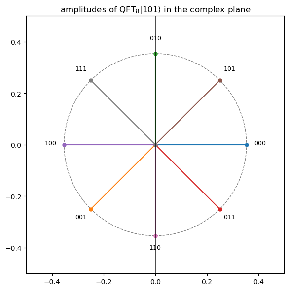
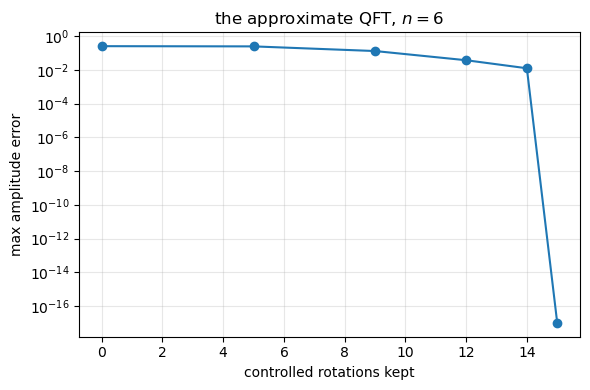
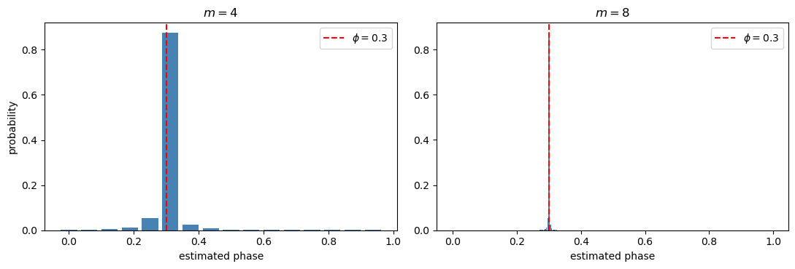
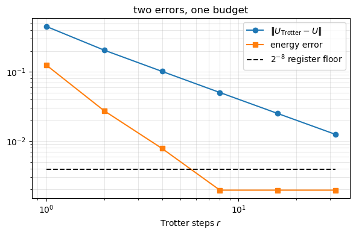
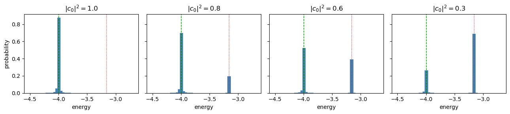

20. The quantum Fourier transform and phase estimation#
Executable companion to chapter 19.
Every method so far in this book has been classical, and several have run into the exponential wall. A quantum computer does not remove the wall — it moves it, storing a state of \(M\) modes in \(M\) qubits rather than \(2^M\) complex numbers. This notebook builds the two algorithms that let one extract an eigenvalue from such a register:
the quantum Fourier transform, which converts phase information into computational-basis information;
quantum phase estimation, which uses it to read an eigenphase out in binary, to precision \(2^{-m}\) with \(m\) qubits.
Then we apply it to the Lipkin, pairing, Heisenberg and Hubbard models of chapter 4.
Nothing new is needed from the formalism. Chapter 2 already set out the gate model in the language of chapter 1 — states in the computational basis evolving by unitary matrices, with measurement given by projection operators — and observed that quantum computing is a restricted form of linear algebra: matrix–vector multiplications with special unitary matrices on exponentially large vectors. This notebook is that observation carried through to an algorithm, using the tensor product, the Pauli matrices, unitarity and the spectral decomposition of chapter 1, and the Trotter–Suzuki splitting of chapter 6.
import sys
import sys, os, glob
# the chapter programs live in BookPrograms/chapterNN; put them all on the path
for _d in sorted(glob.glob(os.path.join("..", "BookManybody",
"BookPrograms", "chapter*"))):
if _d not in sys.path:
sys.path.insert(0, _d)
import math
import numpy as np
import matplotlib.pyplot as plt
import qpe
20.1. 1. The quantum Fourier transform#
the classical DFT matrix applied to the amplitudes of a state. Two things at once. The power: \(\mathcal{O}(n^2)\) gates for a transform on \(N = 2^n\) amplitudes. The disappointment: the answer is in the amplitudes, which cannot be read out — measuring gives one basis state drawn from \(|y_k|^2\). So the QFT is useless for transforming data and invaluable inside algorithms that need one number out of the transform.
20.1.1. The product form#
Write \(k\) in binary. Then \(xk/2^n = x\sum_m k_m/2^m\), so the phase factors,
and since each \(k_m \in \{0,1\}\) the sum over all \(k\) factorises too:
using that only the fractional part of \(x/2^m\) survives in the exponential, and that fractional part is the binary fraction \(0.x_{n-m+1}\dots x_n\).
Three consequences: the output is a product state (no entanglement); the order is reversed; and each factor is a Hadamard plus a few controlled phase rotations — which is the circuit.
checks = qpe.check_qft(4)
for key, label in (("matrix", "circuit vs. the Fourier matrix"),
("product_form", "circuit vs. the product form"),
("fft", "circuit vs. numpy.fft"),
("inverse", "inverse QFT o QFT = identity"),
("unitary", "assembled circuit is unitary")):
print(f"{label:<36s} {checks[key]:.2e}")
print()
print("The second line is the one that matters: the product form is built")
print("with no circuit at all, straight from the binary-fraction")
print("factorisation, so agreement tests the derivation and not merely the")
print("implementation's self-consistency.")
circuit vs. the Fourier matrix 3.78e-15
circuit vs. the product form 1.89e-16
circuit vs. numpy.fft 2.42e-16
inverse QFT o QFT = identity 2.99e-16
assembled circuit is unitary 6.66e-16
The second line is the one that matters: the product form is built
with no circuit at all, straight from the binary-fraction
factorisation, so agreement tests the derivation and not merely the
implementation's self-consistency.
20.1.2. The worked example: \(\mathrm{QFT}_8|101\rangle\)#
Here \(x_1=1, x_2=0, x_3=1\), so \(x=5\), and the binary fractions are \(0.1 = \tfrac12\), \(0.01 = \tfrac14\), \(0.101 = \tfrac58\):
state = qpe.qft(qpe.basis_state("101"), 3)
print(f"{'k':>5s} {'amplitude':>26s} {'|amp|':>9s} {'phase/2pi':>11s} {'5k/8 mod 1':>11s}")
for k in range(8):
a = state[k]
print(f"{qpe.bitstring(k,3):>5s} {a.real:+11.6f}{a.imag:+11.6f}i "
f"{abs(a):9.6f} {np.angle(a)/(2*math.pi) % 1.0:11.6f} "
f"{(5*k/8) % 1.0:11.6f}")
print()
print(f"every modulus is 1/sqrt(8) = {1/math.sqrt(8):.6f}, and the phase of")
print("|k> is 5k/8 mod 1 -- the Fourier kernel with x = 5, as it must be.")
fig, ax = plt.subplots(figsize=(6, 6))
circle = plt.Circle((0, 0), 1/math.sqrt(8), fill=False, ls="--", color="gray")
ax.add_artist(circle)
for k in range(8):
ax.plot([0, state[k].real], [0, state[k].imag], "-o", ms=5)
ax.annotate(qpe.bitstring(k, 3), (state[k].real*1.15, state[k].imag*1.15),
ha="center", fontsize=9)
ax.set_aspect("equal"); ax.set_xlim(-0.5, 0.5); ax.set_ylim(-0.5, 0.5)
ax.axhline(0, color="k", lw=0.5); ax.axvline(0, color="k", lw=0.5)
ax.set_title(r"amplitudes of $\mathrm{QFT}_8|101\rangle$ in the complex plane")
plt.tight_layout(); plt.show()
k amplitude |amp| phase/2pi 5k/8 mod 1
000 +0.353553 +0.000000i 0.353553 0.000000 0.000000
001 -0.250000 -0.250000i 0.353553 0.625000 0.625000
010 +0.000000 +0.353553i 0.353553 0.250000 0.250000
011 +0.250000 -0.250000i 0.353553 0.875000 0.875000
100 -0.353553 +0.000000i 0.353553 0.500000 0.500000
101 +0.250000 +0.250000i 0.353553 0.125000 0.125000
110 -0.000000 -0.353553i 0.353553 0.750000 0.750000
111 -0.250000 +0.250000i 0.353553 0.375000 0.375000
every modulus is 1/sqrt(8) = 0.353553, and the phase of
|k> is 5k/8 mod 1 -- the Fourier kernel with x = 5, as it must be.

20.1.3. Cost, the approximate QFT, and bit reversal#
\(n\) Hadamards, \(n(n-1)/2\) controlled rotations, \(\lfloor n/2\rfloor\) swaps — \(\mathcal{O}(n^2)\) against \(\mathcal{O}(4^n)\) for multiplying by the matrix it represents. And \(R_k\) turns the phase by \(2\pi/2^k\), which for large \(k\) is tiny, so dropping rotations with \(k-j\ge d\) gives the approximate QFT.
print(f"{'n':>5s} {'H':>5s} {'controlled R':>14s} {'swaps':>7s} {'direct DFT':>13s}")
for n in (3, 6, 10, 100):
h, r, s = qpe.gate_counts(n)
classical = f"{4.0**n:.1e}" if n <= 10 else "1.6e+60"
print(f"{n:5d} {h:5d} {r:14d} {s:7d} {classical:>13s}")
print()
ds, errs, rots = [], [], []
for d, rotations, error in qpe.approximation_error(6, 37):
ds.append(d); errs.append(error); rots.append(rotations)
print(f"d = {d}: {rotations:2d} rotations, max amplitude error {error:.3e}")
plt.figure(figsize=(6, 4))
plt.semilogy(rots, np.maximum(errs, 1e-17), "o-")
plt.xlabel("controlled rotations kept"); plt.ylabel("max amplitude error")
plt.title("the approximate QFT, $n=6$")
plt.grid(alpha=0.3); plt.tight_layout(); plt.show()
n H controlled R swaps direct DFT
3 3 3 1 6.4e+01
6 6 15 3 4.1e+03
10 10 45 5 1.0e+06
100 100 4950 50 1.6e+60
d = 1: 0 rotations, max amplitude error 2.497e-01
d = 2: 5 rotations, max amplitude error 2.425e-01
d = 3: 9 rotations, max amplitude error 1.285e-01
d = 4: 12 rotations, max amplitude error 3.668e-02
d = 5: 14 rotations, max amplitude error 1.227e-02
d = 6: 15 rotations, max amplitude error 0.000e+00

# Bit reversal: the commonest confusion in the subject.
without = qpe.qft(qpe.basis_state("100"), 3, swaps=False)
reversed_input = qpe.qft(qpe.basis_state("001"), 3)
print("no-swap output of |100> vs. with-swap output of the bit-reversed |001>:")
print(f" difference {np.abs(without - reversed_input).max():.1e}")
print()
print("Many libraries omit the final swaps and document the reversed")
print("convention instead, since a relabelling costs nothing classically.")
print("The consequence is that a circuit copied between libraries can be")
print("silently wrong. When in doubt, transform |1> and see where the phase")
print("e^{i pi} ends up.")
no-swap output of |100> vs. with-swap output of the bit-reversed |001>:
difference 6.5e-01
Many libraries omit the final swaps and document the reversed
convention instead, since a relabelling costs nothing classically.
The consequence is that a circuit copied between libraries can be
silently wrong. When in doubt, transform |1> and see where the phase
e^{i pi} ends up.
20.2. 2. Quantum phase estimation#
Let \(U|\psi\rangle = e^{2\pi i\phi}|\psi\rangle\). Prepare \(m\) control qubits in \(|0\rangle\), Hadamard them, then apply \(U^{2^j}\) controlled on qubit \(j\). Since \(|\psi\rangle\) is an eigenstate the system register factors out and the control register is left in
Compare with the definition of the QFT. If \(\phi = m'/2^m\) this is exactly \(\mathrm{QFT}|m'\rangle\) — so the inverse QFT returns \(|m'\rangle\) and measuring gives the binary digits of \(\phi\) with certainty. That is the whole algorithm: step 2 writes the phase into a Fourier state, step 3 inverts the Fourier transform.
exact = qpe.check_exact_phase(3, 5/8)
print(f"phi = 5/8 = 0.101, m = 3 control qubits:")
print(f" measured |{exact['bits']}> with probability {exact['probability']:.6f}")
print(f" estimate {exact['estimate']}, exact {exact['exact']}")
print()
print("When the phase is not exactly representable -- which, for a")
print("Hamiltonian eigenvalue, it never is -- the output is a distribution.")
print()
print(f"{'m':>4s} {'outcome':>12s} {'p':>9s} {'estimate':>11s} {'error':>10s}")
for m in (3, 4, 6, 8):
out = qpe.check_inexact_phase(m, 0.3)
print(f"{m:4d} {out['bits']:>12s} {out['probability']:9.4f} "
f"{out['estimate']:11.6f} {abs(out['estimate']-0.3):10.2e}")
phi = 5/8 = 0.101, m = 3 control qubits:
measured |101> with probability 1.000000
estimate 0.625, exact 0.625
When the phase is not exactly representable -- which, for a
Hamiltonian eigenvalue, it never is -- the output is a distribution.
m outcome p estimate error
3 010 0.5775 0.250000 5.00e-02
4 0101 0.8756 0.312500 1.25e-02
6 010011 0.8752 0.296875 3.12e-03
8 01001101 0.8751 0.300781 7.81e-04
# the full distribution, and the Dirichlet kernel behind it
fig, axes = plt.subplots(1, 2, figsize=(11, 3.8))
for ax, m in zip(axes, (4, 8)):
dist = qpe.phase_estimation(qpe.phase_unitary(0.3), np.array([1.0+0j]), m)
ax.bar(np.arange(len(dist)) / len(dist), dist,
width=0.8/len(dist), color="steelblue")
ax.axvline(0.3, color="r", ls="--", label=r"$\phi = 0.3$")
ax.set_xlabel("estimated phase"); ax.set_title(f"$m = {m}$")
ax.legend()
axes[0].set_ylabel("probability")
plt.tight_layout(); plt.show()
print("The envelope is the Dirichlet kernel")
print(" P(m') = sin^2(pi 2^m delta) / (2^{2m} sin^2(pi delta)),")
print("with delta the distance from phi to the representable value m'/2^m.")
print(f"Its worst case gives the standard bound 4/pi^2 = {4/math.pi**2:.4f}.")

The envelope is the Dirichlet kernel
P(m') = sin^2(pi 2^m delta) / (2^{2m} sin^2(pi delta)),
with delta the distance from phi to the representable value m'/2^m.
Its worst case gives the standard bound 4/pi^2 = 0.4053.
20.3. 3. From phases to energies#
With \(U(t) = e^{-i\hat H t}\) and \(\hat H|E\rangle = E|E\rangle\),
The modulus is not a formality: two energies differing by \(2\pi/t\) are indistinguishable — aliasing, exactly as in signal processing. So \(t\) must satisfy \(|E|t < 2\pi\) for every eigenvalue, which needs a bound on the spectrum. On hardware the spectrum is exactly what one does not know, so the bound used is the 1-norm of the Pauli coefficients, \(\Lambda = \sum_\alpha |h_\alpha| \ge \|\hat H\|\). It is loose, and the looseness costs resolution.
20.3.1. The chapter-4 models as qubit Hamiltonians#
The cost is set by three numbers: how many Pauli strings, their weight (which fixes the CNOT ladder length), and how many mutually commuting groups they fall into — terms in a group exponentiate together with no Trotter error at all.
models = [("Lipkin, N = 2", qpe.lipkin_qubit(2, 1.0, 1.0)),
("Lipkin, N = 4", qpe.lipkin_qubit(4, 1.0, 1.0)),
("pairing, 3 levels", qpe.pairing_pair_qubits(3, g=1.0)),
("Heisenberg, 3 sites", qpe.heisenberg_qubit(3, J=1.0)),
("Heisenberg, 4 sites", qpe.heisenberg_qubit(4, J=1.0)),
("Hubbard, 2 sites", qpe.hubbard_qubit(2, t=1.0, U=2.0))]
print(f"{'model':>21s} {'qubits':>7s} {'terms':>7s} {'max weight':>11s} "
f"{'groups':>7s} {'E_0':>11s}")
for name, H in models:
i = qpe.model_summary(name, H)
print(f"{name:>21s} {i['n_qubits']:7d} {i['n_terms']:7d} "
f"{i['max_weight']:11d} {i['groups']:7d} {i['spectrum'][0]:11.5f}")
print()
print("Lipkin and Heisenberg are weight two with no Jordan-Wigner tails, for")
print("opposite reasons: the Lipkin levels are degenerate so the quasispin")
print("operators are sums of single-qubit Paulis, and Heisenberg spins on")
print("different sites simply commute. Hubbard pays the fermionic price.")
print()
print(f"check: 2-site Hubbard exact (U - sqrt(U^2+16t^2))/2 = "
f"{(2 - math.sqrt(4+16))/2:.5f}")
print(f"check: 4-site Heisenberg ring = -2J = -2.00000")
model qubits terms max weight groups E_0
Lipkin, N = 2 2 4 2 2 -1.41421
Lipkin, N = 4 4 16 2 4 -4.00000
pairing, 3 levels 3 9 2 4 -0.70530
Heisenberg, 3 sites 3 9 2 4 -0.75000
Heisenberg, 4 sites 4 12 2 2 -2.00000
Hubbard, 2 sites 4 10 3 2 -1.23607
Lipkin and Heisenberg are weight two with no Jordan-Wigner tails, for
opposite reasons: the Lipkin levels are degenerate so the quasispin
operators are sums of single-qubit Paulis, and Heisenberg spins on
different sites simply commute. Hubbard pays the fermionic price.
check: 2-site Hubbard exact (U - sqrt(U^2+16t^2))/2 = -1.23607
check: 4-site Heisenberg ring = -2J = -2.00000
print("Phase estimation on the models, exact ground state in, exact e^{-iHt}:")
print()
for name, H in models[:4]:
spectrum, vectors = np.linalg.eigh(H)
t = qpe.choose_time(H)
print(f"{name}: exact E_0 = {spectrum[0]:+.6f}, t = {t:.4f}")
print(f"{'':>4s}{'m':>4s} {'outcome':>12s} {'p':>8s} {'E (QPE)':>12s} {'error':>10s}")
for m in (4, 6, 8, 10):
out = qpe.qpe_on_hamiltonian(H, vectors[:, 0], t, m)
print(f"{'':>4s}{m:4d} {out['bits']:>12s} {out['probability']:8.4f} "
f"{out['energy']:+12.6f} {abs(out['energy']-spectrum[0]):10.2e}")
print()
print("The accuracy is set entirely by the control register, not by the size")
print("or nastiness of the physical system. What the Hamiltonian controls is")
print("the cost of each application of U.")
Phase estimation on the models, exact ground state in, exact e^{-iHt}:
Lipkin, N = 2: exact E_0 = -1.414214, t = 2.8274
m outcome p E (QPE) error
4 1010 0.8957 -1.388889 2.53e-02
6 101001 0.7811 -1.423611 9.40e-03
8 10100011 0.9778 -1.414931 7.17e-04
10 1010001100 0.6887 -1.414931 7.17e-04
Lipkin, N = 4: exact E_0 = -4.000000, t = 0.7069
m outcome p E (QPE) error
4 0111 0.8756 -3.888889 1.11e-01
6 011101 0.8752 -4.027778 2.78e-02
8 01110011 0.8751 -3.993056 6.94e-03
10 0111001101 0.8751 -4.001736 1.74e-03
pairing, 3 levels: exact E_0 = -0.705303, t = 1.3306
m outcome p E (QPE) error
4 0010 0.5913 -0.590278 1.15e-01
6 001010 0.5033 -0.737847 3.25e-02
8 00100110 0.8300 -0.700955 4.35e-03
10 0010011001 0.9893 -0.705566 2.63e-04
Heisenberg, 3 sites: exact E_0 = -0.750000, t = 2.5133
m outcome p E (QPE) error
4 0101 0.8756 -0.781250 3.12e-02
6 010011 0.8752 -0.742188 7.81e-03
8 01001101 0.8751 -0.751953 1.95e-03
10 0100110011 0.8751 -0.749512 4.88e-04
The accuracy is set entirely by the control register, not by the size
or nastiness of the physical system. What the Hamiltonian controls is
the cost of each application of U.
20.3.2. The second error: Trotterisation#
On hardware \(e^{-i\hat H t}\) must itself be built from gates,
with a first-order error \(\mathcal{O}(t^2/r)\) controlled by the commutators. This has nothing to do with the size of the control register — and the two must be balanced.
H = qpe.heisenberg_qubit(3, J=1.0)
spectrum, vectors = np.linalg.eigh(H)
ground, t = vectors[:, 0], qpe.choose_time(H)
coefficients = qpe.pauli_terms(H)
labels = [l for l in coefficients if l.count("I") != len(l)]
table = {"I": qpe.I2, "X": qpe.X, "Y": qpe.Y, "Z": qpe.Z}
terms = []
for group in qpe.commuting_groups(labels):
block = np.zeros_like(H)
for label in group:
matrix = np.array([[1.0]], dtype=complex)
for letter in label:
matrix = np.kron(matrix, table[letter])
block = block + coefficients[label] * matrix
terms.append(block)
print(f"the Hamiltonian splits into {len(terms)} commuting groups\n")
exact_u = qpe.evolution_operator(H, t)
rs, e_err, u_err = [], [], []
print(f"{'r':>5s} {'E (QPE)':>12s} {'energy error':>13s} {'|U_trot - U|':>14s}")
for r in (1, 2, 4, 8, 16, 32):
out = qpe.qpe_on_hamiltonian(H, ground, t, 8, terms=terms, trotter_steps=r)
approx = qpe.trotter_operator(terms, t, r)
rs.append(r); e_err.append(abs(out["energy"]-spectrum[0]))
u_err.append(np.abs(approx-exact_u).max())
print(f"{r:5d} {out['energy']:+12.6f} {e_err[-1]:13.2e} {u_err[-1]:14.2e}")
plt.figure(figsize=(6, 4))
plt.loglog(rs, u_err, "o-", label=r"$\|U_{\rm Trotter} - U\|$")
plt.loglog(rs, e_err, "s-", label="energy error")
plt.loglog(rs, [2.0**-8]*len(rs), "k--", label=r"$2^{-8}$ register floor")
plt.xlabel("Trotter steps $r$"); plt.legend(); plt.grid(alpha=0.3, which="both")
plt.title("two errors, one budget"); plt.tight_layout(); plt.show()
the Hamiltonian splits into 4 commuting groups
r E (QPE) energy error |U_trot - U|
1 -0.625000 1.25e-01 4.52e-01
2 -0.722656 2.73e-02 2.06e-01
4 -0.742188 7.81e-03 1.01e-01
8 -0.751953 1.95e-03 5.03e-02
16 -0.751953 1.95e-03 2.50e-02
32 -0.751953 1.95e-03 1.25e-02

The operator error falls cleanly as \(1/r\) — the first-order rate. The energy error follows it down and then stops, on the floor set by the 8-qubit register. Beyond that point every extra Trotter step is wasted work. The two errors must be balanced against each other, not minimised separately, and it is that balance which fixes the circuit depth of a real calculation.
20.3.3. Why this is fatal here and harmless in unitary coupled cluster#
Chapter 10 met exactly the same splitting. Yet for the pairing model every Trotter number from \(n=1\) upwards gave the same UCC energy to ten digits — the crudest possible splitting cost nothing. The reason is not that the error was small: it is that the UCC amplitudes are variational, so the optimiser absorbs the splitting error into them, finding whichever values are best for the parametrisation it is handed.
Nothing of the kind is available to phase estimation. There is no parameter to re-optimise. Trotterising \(U\) does not perturb the answer around the right one — it changes the operator whose spectrum is being measured, and QPE then reports the eigenvalue of the wrong operator to full precision. That is the difference between the two algorithmic philosophies of this part of the book: a variational method has parameters that absorb the imperfections of its own circuit, a projective method has none. What QPE gains in exchange is the exponential precision no variational method offers.
20.4. 4. The state you start from#
One assumption has been silent throughout: that the system register holds an eigenstate. It need not. Fed \(|\psi\rangle = \sum_j c_j|E_j\rangle\), linearity carries every term through independently and measurement returns \(E_j\) with probability \(|c_j|^2\).
QPE does not average and does not degrade gracefully. It returns one eigenvalue, and the run that returns \(E_0\) returns it to full precision. The overlap does not control the accuracy — it controls the number of repetitions.
H = qpe.lipkin_qubit(4, 1.0, 1.0)
spectrum, vectors = np.linalg.eigh(H)
t = qpe.choose_time(H)
ground, excited = vectors[:, 0], vectors[:, 1]
i0 = int(qpe.qpe_on_hamiltonian(H, ground, t, 8)["bits"], 2)
i1 = int(qpe.qpe_on_hamiltonian(H, excited, t, 8)["bits"], 2)
print(f"exact E_0 = {spectrum[0]:+.6f}, E_1 = {spectrum[1]:+.6f}\n")
print(f"{'|c_0|^2':>9s} {'p(E_0 bits)':>13s} {'p(E_1 bits)':>13s} {'modal E':>11s}")
dists = []
for mix in (0.0, 0.2, 0.4, 0.7):
trial = math.sqrt(1-mix)*ground + math.sqrt(mix)*excited
trial /= np.linalg.norm(trial)
out = qpe.qpe_on_hamiltonian(H, trial, t, 8)
dists.append((abs(np.vdot(ground, trial))**2, out["distribution"]))
print(f"{dists[-1][0]:9.4f} {out['distribution'][i0]:13.4f} "
f"{out['distribution'][i1]:13.4f} {out['energy']:+11.3f}")
fig, axes = plt.subplots(1, 4, figsize=(13, 3), sharey=True)
for ax, (overlap, dist) in zip(axes, dists):
energies = np.array([qpe.energy_from_phase(k/len(dist), t)
for k in range(len(dist))])
ax.bar(energies, dist, width=0.06, color="steelblue")
ax.axvline(spectrum[0], color="g", ls="--", lw=1)
ax.axvline(spectrum[1], color="r", ls=":", lw=1)
ax.set_xlim(-4.6, -2.6); ax.set_title(f"$|c_0|^2 = {overlap:.1f}$")
ax.set_xlabel("energy")
axes[0].set_ylabel("probability")
plt.tight_layout(); plt.show()
exact E_0 = -4.000000, E_1 = -3.162278
|c_0|^2 p(E_0 bits) p(E_1 bits) modal E
1.0000 0.8751 0.0001 -3.993
0.8000 0.7001 0.1965 -3.993
0.6000 0.5251 0.3930 -3.993
0.3000 0.2625 0.6876 -3.160

The two peaks are the two eigenvalues and their weights are the overlaps. Below \(|c_0|^2 \approx 0.5\) the wrong peak becomes the taller one, and a single-shot experiment reporting the modal outcome is actively misleading.
Two lessons. The honest procedure is to accumulate the whole histogram and identify the peaks — the histogram is the spectrum, weighted by the overlaps, so it gives excited states too, which is something no variational method does. And a good approximate eigenstate is worth having even though QPE does not use it variationally, because it is what keeps the number of repetitions bounded.
That is the hinge between this chapter and the next: the variational quantum eigensolver of chapter 20 prepares the state; phase estimation reads out the energy.